Префектура Нара · Тэнри и Сакураи · маршрут
Тэнри и дорога Яманобэ-но мити: отель без ресторана, древнее святилище, сакэ и лапша сомэн
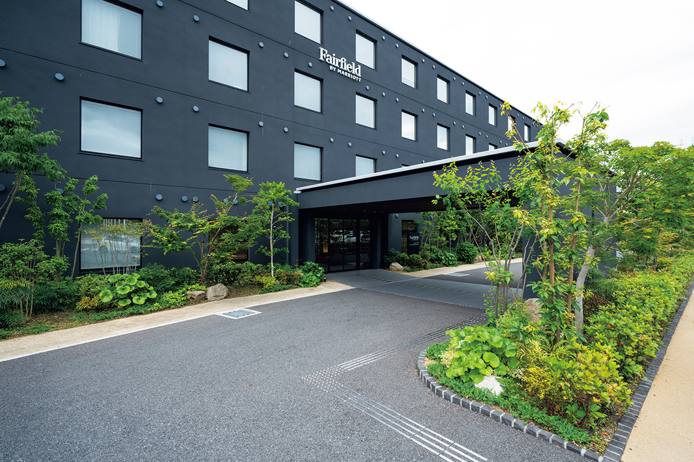
В отеле у древней дороги Яманобэ-но мити нет ни ресторана, ни общей бани, и это сделано нарочно. Ужинать, пить сакэ и пробовать местную лапшу гостей отправляют туда, где всё это делают веками.
Отель
Fairfield by Marriott: только ночлег
Сеть Fairfield by Marriott вместе с японскими партнёрами открыла по стране 29 отелей у дорожных станций «мити-но эки». Так в Японии называют придорожные комплексы с туристическим центром и лавками местных продуктов. Главная особенность этих отелей в том, что они дают только ночлег. Ресторана и большой общей бани нет, поэтому за ужином гости идут в соседние закусочные, а за горячей водой в ближайший онсэн. Дорожная станция рядом служит справочным бюро: здесь подскажут, куда ехать, и продадут то, чем славится округа.
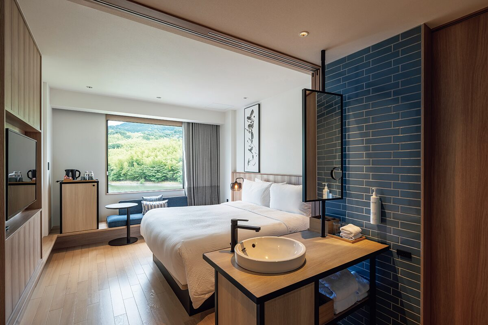
Отель Fairfield by Marriott Nara Tenri Yamanobenomichi открылся в 2022 году, одновременно с соседней дорожной станцией. Он стоит на возвышенности в городе Тэнри, на восточном краю равнины Нара, где среди полей разбросаны древние курганы кофун. Рядом проходит древняя дорога Яманобэ-но мити, её имя есть и в названии отеля. Она тянется вдоль подножия гор от Тэнри к Сакураи. На машине отсюда около получаса до большинства известных мест префектуры.
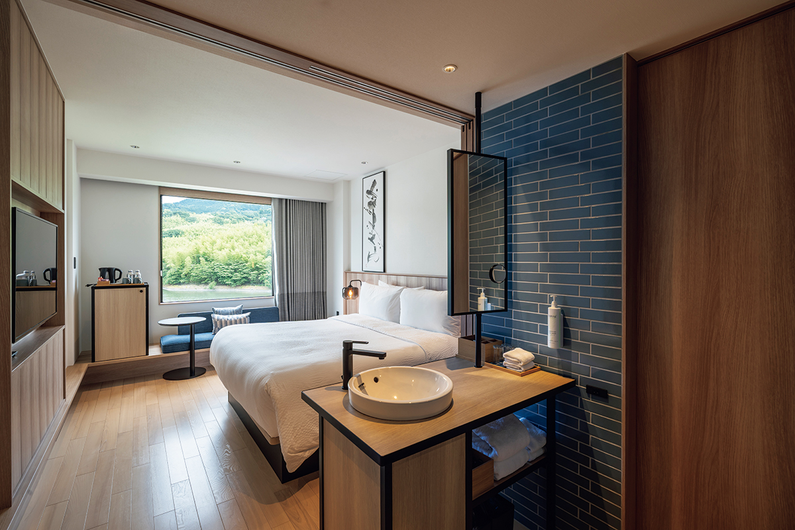
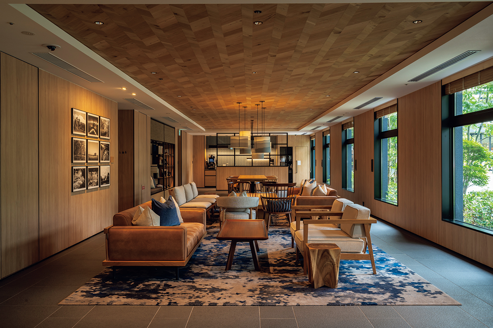
Номера оформлены просто и аккуратно. Кровати здесь фирмы Simmons, бельё хорошего качества, и после целого дня пешком по старой дороге этого вполне достаточно. Управляющий отелем советует приезжать не на одну ночь: отсюда удобно выходить на исторические прогулки несколько дней подряд.
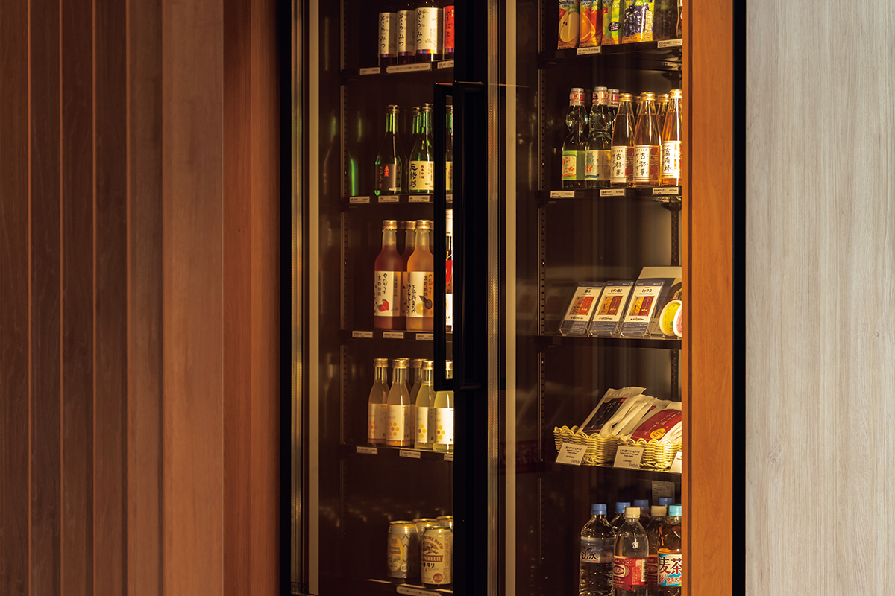
Fairfield by Marriott Nara Tenri Yamanobenomichi
- Адрес
- префектура Нара, Тэнри, Сонотиути-тё, Мотоямагутиката, 438-7
- Телефон
- +81 743-62-3150
- Номера
- 99, от 15 730 иен за номер в сутки с налогом и сервисным сбором; оплата только картой, наличные не принимают
- Заезд / выезд
- 15:00 / 11:00
- Как добраться
- на машине около 7 минут от развязки Тэнри-хигаси скоростной дороги Мэйхан, около 10 минут от станции Тэнри (JR и Kintetsu); от станции Тэнри бесплатный трансфер по предварительной записи; от автобусной остановки «Нара рэкиси гэйдзюцу бункамура» около минуты пешком
По соседству
Дорожная станция с мастерскими реставраторов
Соседняя дорожная станция «Нара рэкиси гэйдзюцу бункамура», то есть Деревня истории, искусства и культуры Нары, больше похожа на культурный центр. В ней четыре корпуса: для встреч и торговли, для реставрации и выставок, для занятий искусством и информационный.
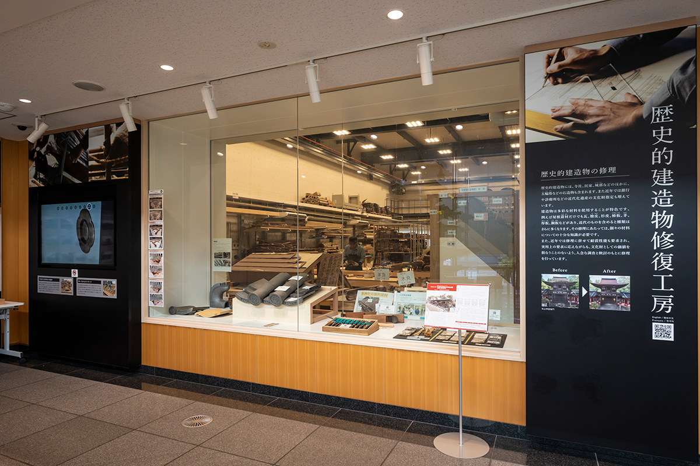
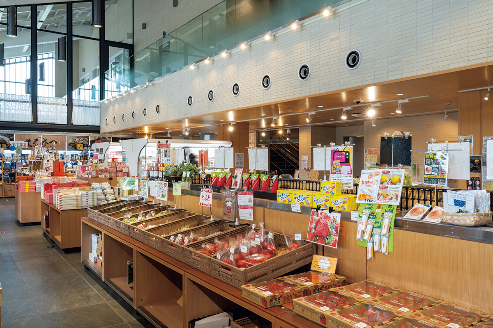
Дорожная станция «Нара рэкиси гэйдзюцу бункамура»
- Адрес
- префектура Нара, Тэнри, Сонотиути-тё, 437-3
- Телефон
- +81 743-86-4420
- Часы работы
- корпус реставрации и выставок 9:00–17:00 (последний вход в 16:30), корпус искусства до 20:00, корпус для встреч и торговли до 18:00 (ресторан до 20:00), информационный корпус до 17:00
- Выходные
- понедельник (если праздник, то следующий будний день; магазин и ресторан работают), с 28 декабря по 4 января
Маршрут
Святилище, сакэ, лапша и сладости
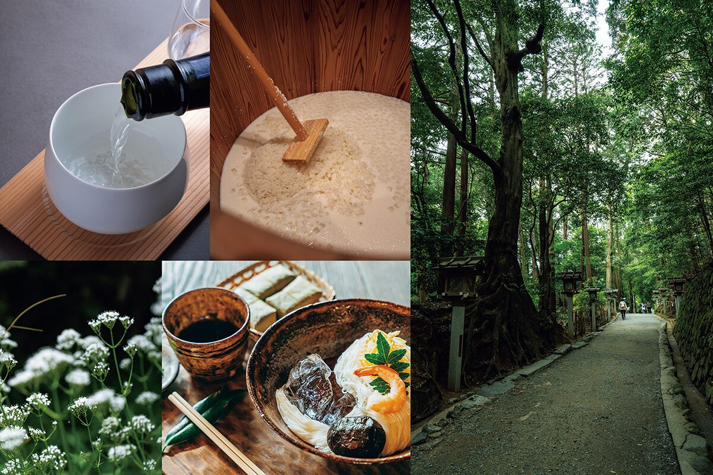
Первым делом с дороги Яманобэ-но мити стоит свернуть к святилищу Омива. Это одно из древнейших святилищ Японии, его происхождение описано в мифах древних летописей «Кодзики» и «Нихон сёки». Большие ворота тории стоят у шоссе, за ними поднимается гора Мива. За вторыми тории начинается заповедная роща, и здесь сразу становится тише и строже. В мифах божество Мивы часто является в облике змеи, поэтому местные жители ласково зовут его «Мии-сан».
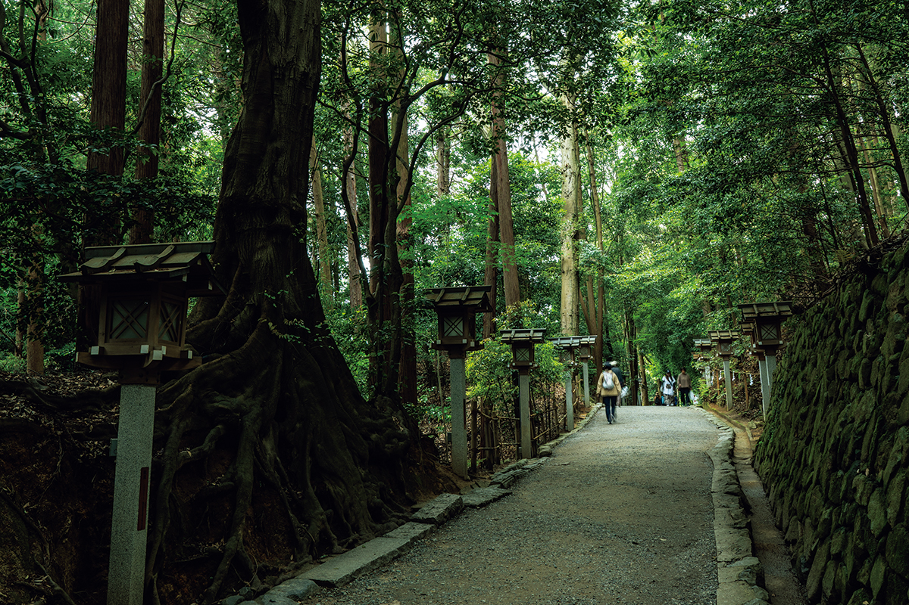
Святилище Омива: молятся самой горе
Святилище Омива называют ещё Мива-мёдзин. Божество здесь пребывает в самой горе Мива, и молятся ей сквозь молельный зал. Так почитали богов в глубокой древности, и этот обычай дошёл до наших дней. Кроме молельного зала, который охраняется как важная культурная ценность, в комплекс входят малые святилища. Святилищу Икухи поклоняются сакэвары: здесь чтят предка мастеров сакэ. В святилище Сай идут молиться об исцелении от болезней.
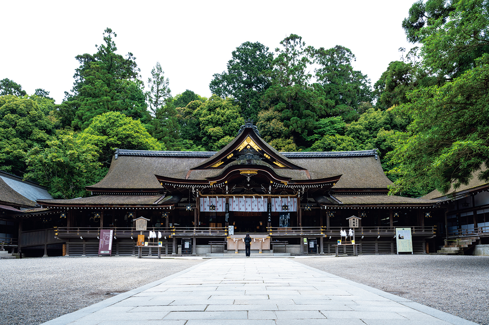
Иэцуна Токугава (1641–1680) был четвёртым сёгуном династии Токугава, которая правила Японией из Эдо.
Святилище Омива
- Адрес
- префектура Нара, Сакураи, Мива, 1422
- Телефон
- +81 744-42-6633
- Часы работы
- территория открыта всегда, павильон амулетов 9:00–17:00 (зависит от сезона)
- Сайт
- oomiwa.or.jp
Imanishi Shuzo: новая сакэварня у святилища
На дороге к святилищу выделяется здание новой сакэварни Imanishi Shuzo. Его построили из криптомерии Ёсино, чьи корни, как считается, восходят к криптомериям горы Мива. Стены сложены старинными способами Нары итакура и адзэкура, из досок и брусьев, как в древней сокровищнице Сёсоин. Святилище Омива почитают как дом бога сакэ, и рядом с ним стоит купить бутылку, сваренную по методу бодай-мото. Этот способ закваски называют истоком японского сакэ.
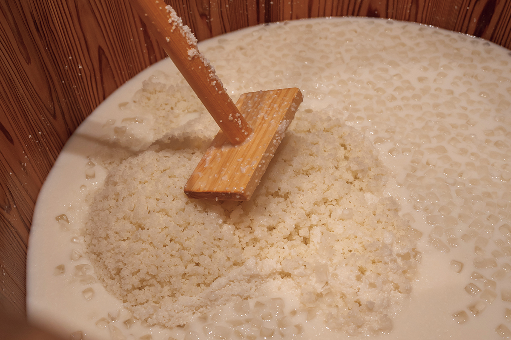
Сакэварню основали в 1660 году, и девиз у неё «пить Миву»: сакэ варят на подземной воде горы. Новое здание «Мива дэнсё-гура» открылось в апреле 2025 года. Здесь весь рис для сакэ выращен в префектуре Нара, закваска делается методом бодай-мото, а бродит сакэ в чанах из криптомерии Ёсино.
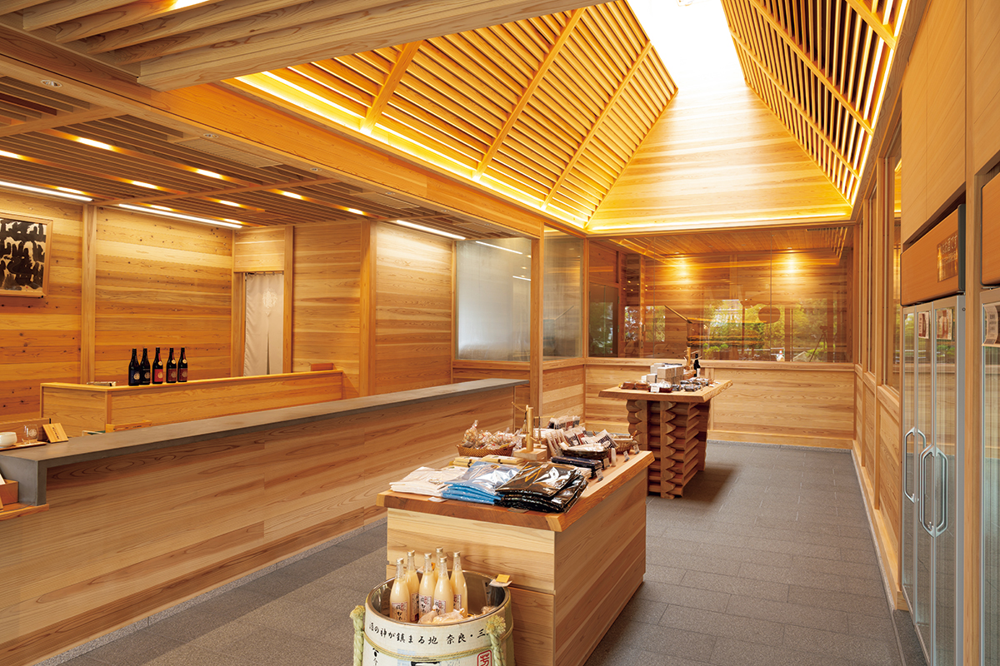
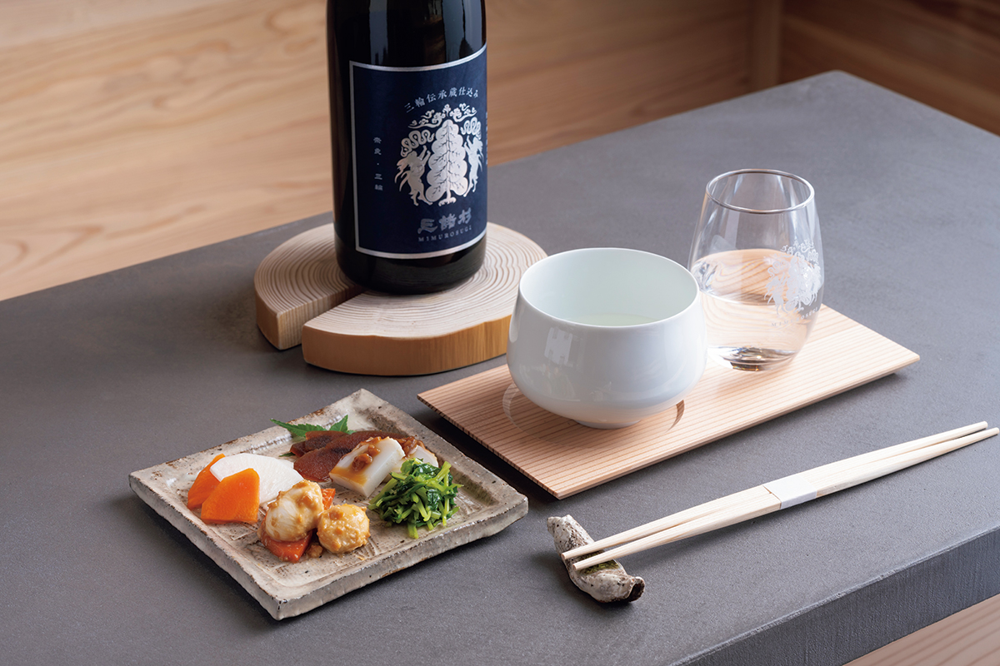
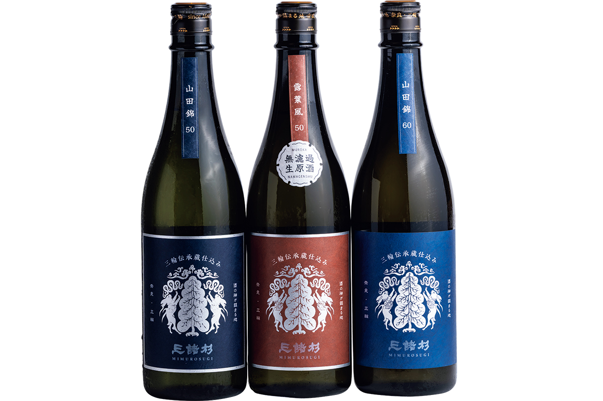
Imanishi Shuzo «Мива дэнсё-гура»
- Адрес
- префектура Нара, Сакураи, Мива, Мотобабаката, 552
- Телефон
- +81 744-42-6022
- Часы работы
- 10:00–17:00
- Выходные
- нерегулярные
Katsui: западная кухня с видом на курганы
Ресторан западной кухни Katsui много лет работал в Осаке, в квартале Синсайбаси. В 2017 году шеф перевёз его в Янагимото, свой родной район Тэнри. Теперь из окон видны курганы и просторы равнины Нара, а порции здесь щедрые. Утром подают сытные завтраки, днём комплексные обеды, а в некоторые дни недели работает ужин.
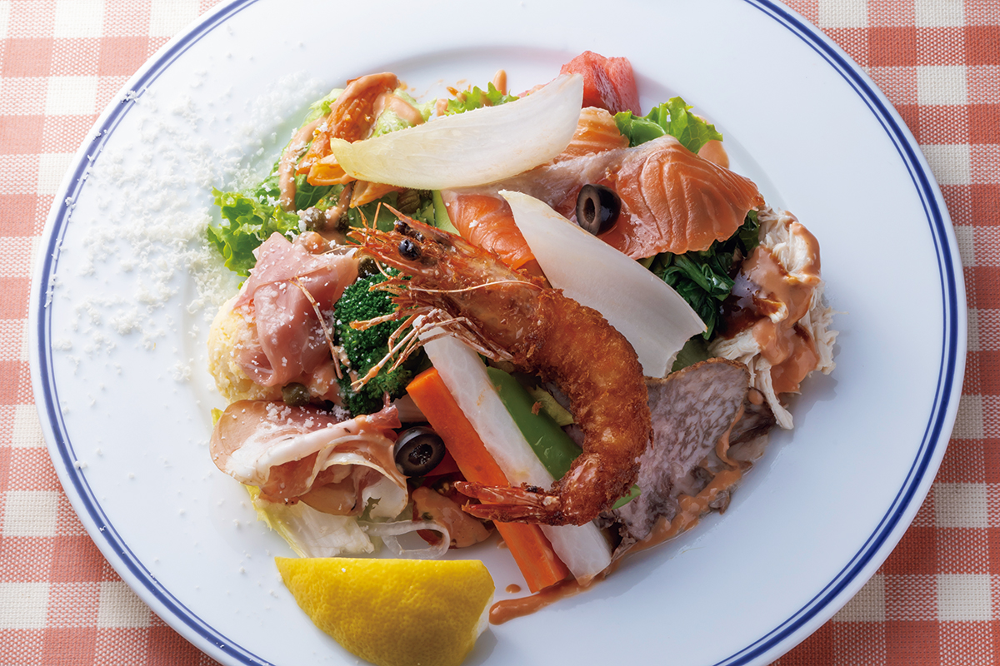
Katsui
- Адрес
- префектура Нара, Тэнри, Янагимото-тё, 577-1, в Тэнрийском центре для пеших маршрутов
- Телефон
- +81 743-67-3838
- Часы работы
- завтрак 9:00–10:00, обед и кафе 11:00–16:30 (в понедельник до 14:00), ужин 17:00–21:00 (последний заказ 20:30) только с четверга по воскресенье и в праздники
- Выходные
- первый понедельник месяца и выходные дни центра
- Сайт
- katsui1999.com
«Сомэн-докоро Морисё»: лапша там, где её придумали
Мива считается родиной сомэн, тонкой пшеничной лапши, поэтому и обедать здесь логично ею. Лавка «Морисё» стоит слева, если идти ко вторым тории святилища Омива. Её устроили в садовой части старого дома, которому больше ста лет. Подают «хинэ-сомэн», выдержанную лапшу с ярким пшеничным вкусом, и наборы с суши в листьях хурмы.
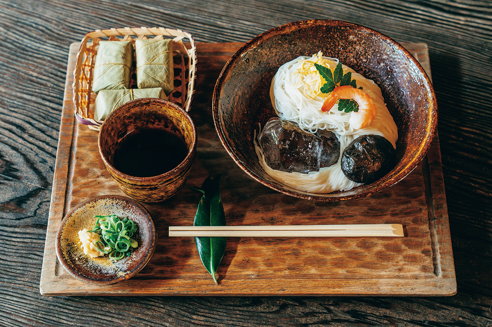
«Сомэн-докоро Морисё»
- Адрес
- префектура Нара, Сакураи, Мива, 535
- Телефон
- +81 744-43-7411
- Часы работы
- 10:40–15:30, в субботу и праздники 10:30–16:00, в воскресенье 10:00–16:00, 1-го числа каждого месяца 8:00–13:30
- Выходные
- понедельник, вторник
«Яманобэ-но мити Ханамори»: варабимоти с только что смолотой кинако
После обеда можно передохнуть в кафе «Ханамори» в отдельном доме у самой дороги Яманобэ-но мити. Хозяин долго готовил японскую еду и теперь кормит путников комплексными обедами с сомэн, десертами и напитками. Главная его особенность: соевые бобы мелют прямо при гостях и сразу посыпают свежей мукой кинако желе варабимоти.
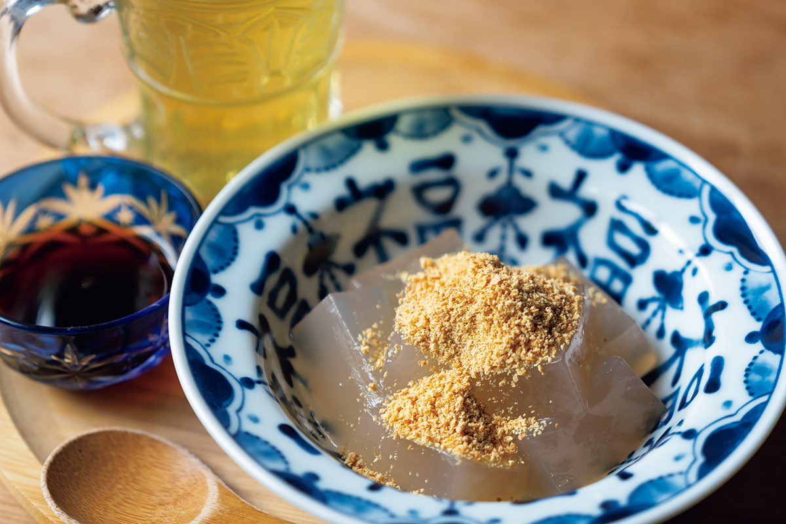
«Яманобэ-но мити Ханамори»
- Адрес
- префектура Нара, Сакураи, Тихара, 222-4
- Телефон
- +81 744-46-4260
- Часы работы
- 10:00–17:00
- Выходные
- понедельник (если праздник или 1-е число месяца, то следующий день)
Чуть дальше
Оуда и старейший сад лекарственных трав
Если есть время, стоит проехать немного на восток, в Оуду, старый город лекарств. Здесь сохранился сад «Морино кю-якуэн», старейший из частных садов лекарственных растений, что дошли до наших дней. В любое время года в нём что-нибудь цветёт или зеленеет.
Сад основал в 1729 году Тосукэ Морино, первый в роду владельцев. Сёгунат пожаловал ему шесть видов лекарственных растений, он добавил к ним травы, собранные сам, и посадил всё на поле за домом, на склоне холма. Сегодня в саду растут около 250 видов лекарственных трав и деревьев.
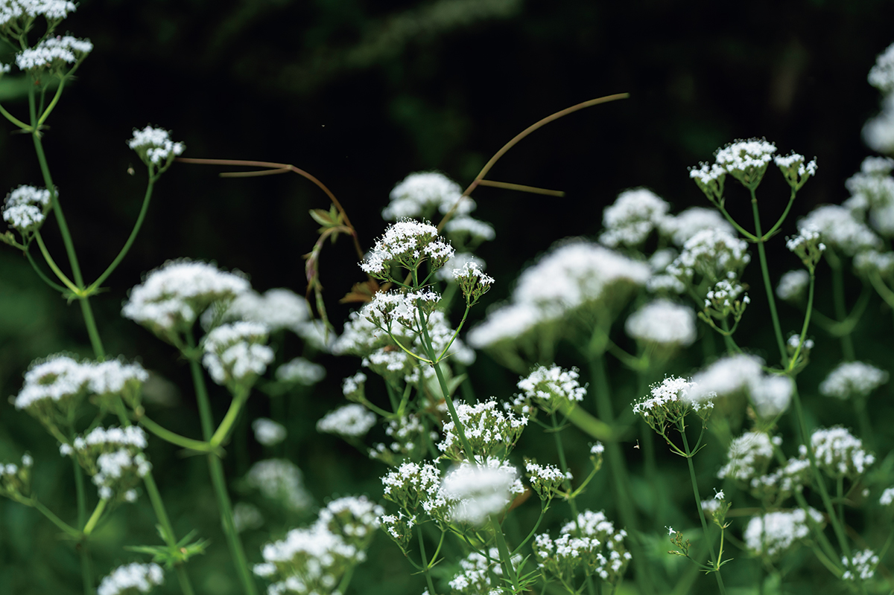
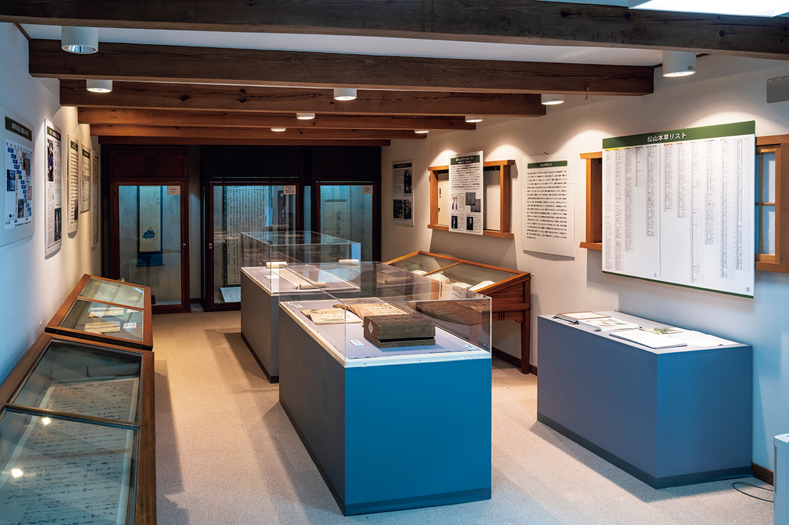
«Морино кю-якуэн»
- Адрес
- префектура Нара, Уда, Оуда, Камисин, 1880
- Телефон
- +81 745-83-0002
- Часы работы
- 9:00–16:30
- Выходные
- нерегулярные
- Цены / Вход
- 500 иен
Тэнри
CoFuFun: курганы у вокзала
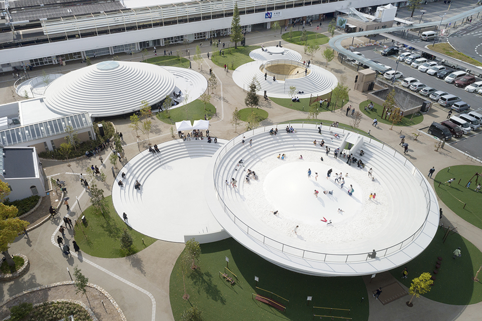
Если приехать в Тэнри на поезде, первое, что встречает у станции JR и Kintetsu, это площадь CoFuFun. Её открыли в апреле 2017 года как место встреч горожан и гостей. Проект был частью городской программы оживления Тэнри, от объявления до открытия прошло больше трёх лет. Площадь спроектировала студия nendo, которой руководит дизайнер Оки Сато.
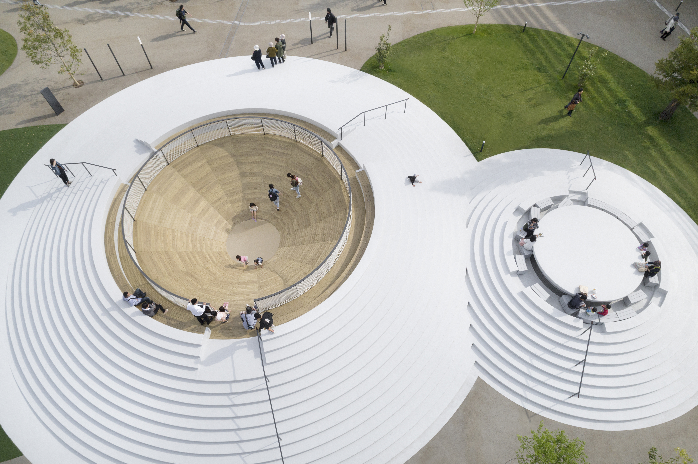
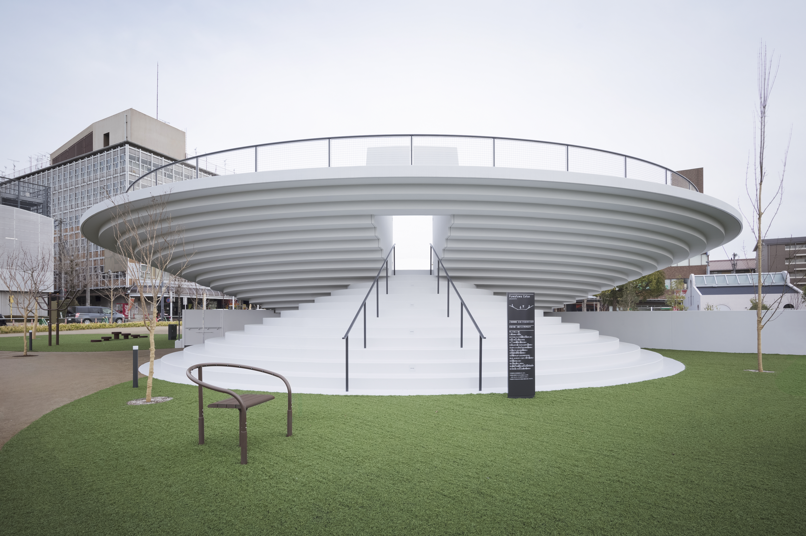
Образом для площади Оки Сато выбрал курганы кофун: в городе Тэнри их, говорят, около 1600. В дизайне соединились три темы: история, география и культура города.
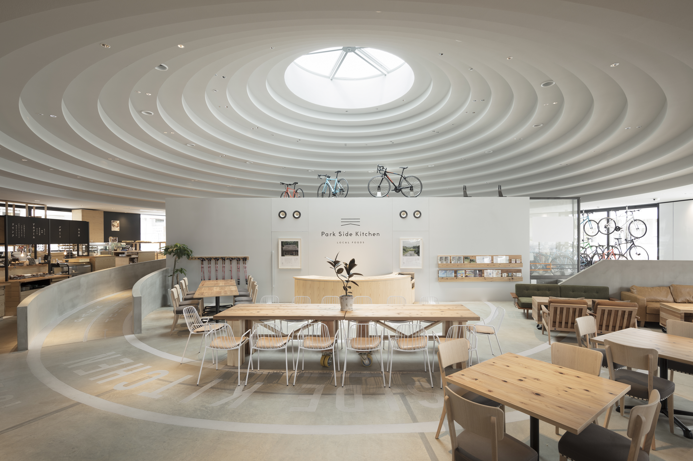
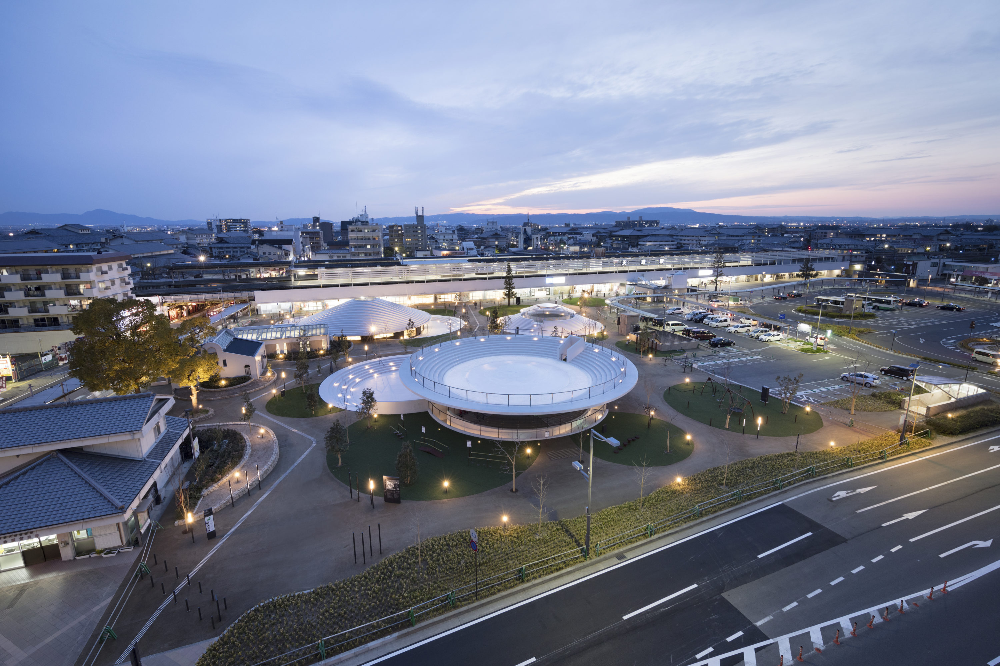
Площадь CoFuFun у станции Тэнри
- Адрес
- префектура Нара, Тэнри, Кавараносё-тё, 803
- Телефон
- +81 743-63-1001 (мэрия Тэнри, отдел площади CoFuFun)
- Часы работы
- круглосуточно (для мероприятий 8:00–21:00)
- Сайт
- cofufun.com
Фото: Садахо Найто, Такуми Ота.